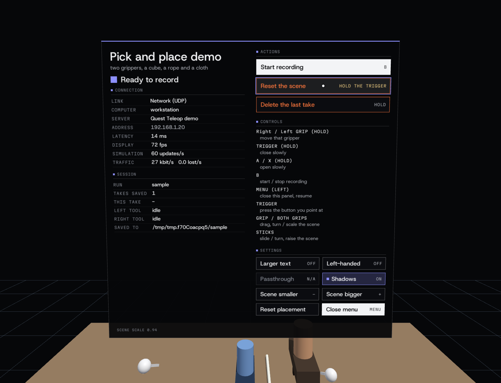
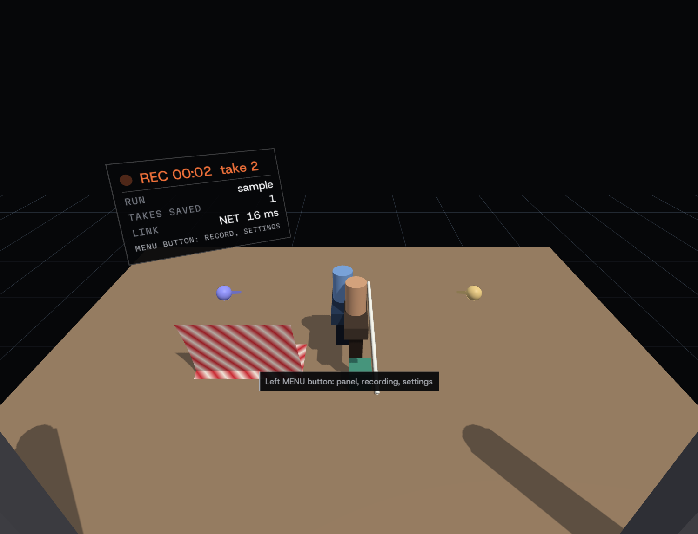
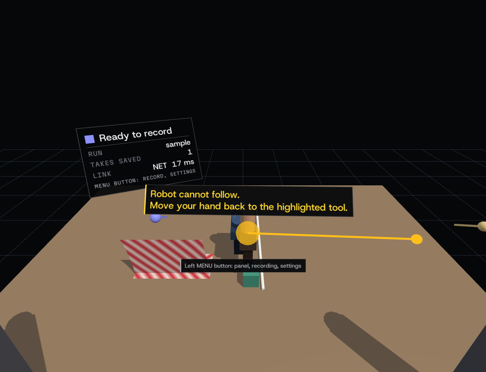
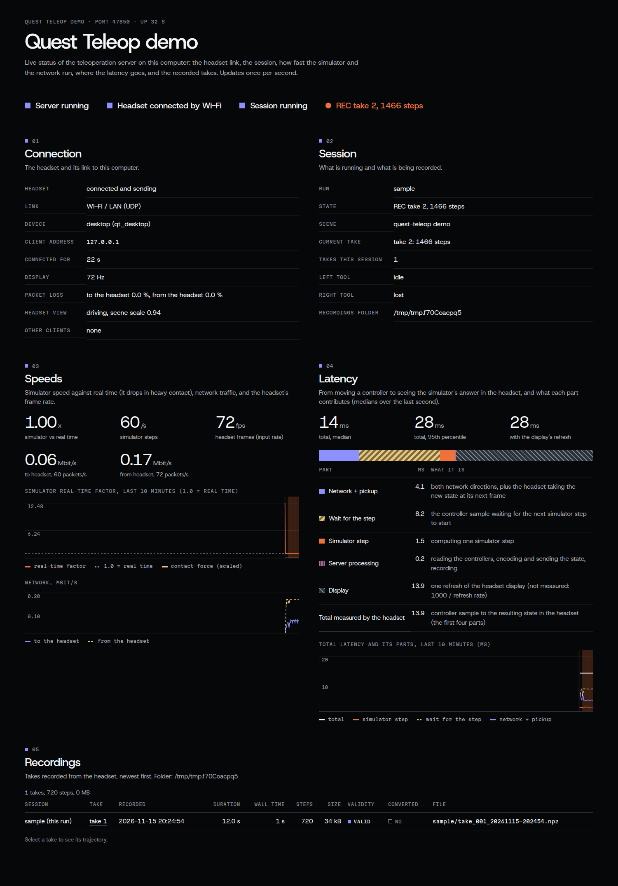

Open source · MIT · version 0.2.0
quest-teleop
Teleoperate any simulator or robot from a Meta Quest 2: a small native headset app shows your 3D scene in the room and sends both controllers back to a Python library on your computer. No game engine.
For your coding agent
Let your agent set it up
Paste this one line into your AI coding agent. It reads the docs index, then installs the library, builds the headset app and walks you through the Quest 2 steps that need your hands.
Read https://entangledquantum.github.io/quest-teleop/llms.txt and follow it to install quest-teleop, set up my Quest 2, and show me how to use it.
What is in it
Four parts, one protocol
- Native headset appOpenXR and OpenGL ES 3 in C++. About 1 MB, built by two scripts: no game engine, no Gradle, no Java.
- Python server library
pip install, numpy only. Streams meshes, deforming meshes and ropes; returns poses and buttons. - About 14 ms latencyMedian from controller sample to simulator state on a Quest 2 at 72 Hz, over USB or Wi-Fi.
- Desktop client and demoTry a server without a headset: the same renderer in a window, driven by mouse and keyboard.
Highlights
What you see
Real screenshots from the bundled demo. The headset views are drawn by the desktop client, which shares its renderer and interface code with the headset app.
-

In-headset panel
Your rows, your actions as buttons, the control legend and settings, laid out by the headset. Dangerous actions need the trigger held.
-

Take recording
One button starts and stops a take. Each take is one file with tool poses, grippers, controllers and any data of your own.
-

Haptics and a go-back cue
Contact becomes vibration. When the robot cannot follow your hand, it holds, and the headset shows where the tool really is.
-

Local status page
Connection, simulator and network speeds, latency split into its parts, and every recorded take. Standard library only, nothing loaded from the internet.
-

Trajectory viewer
Each tool's path in 3D with the gripper state marked along it. Turn, zoom, play and scrub through a take.